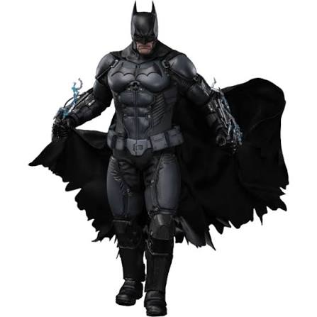
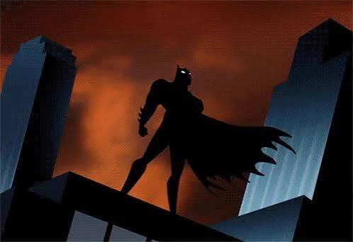
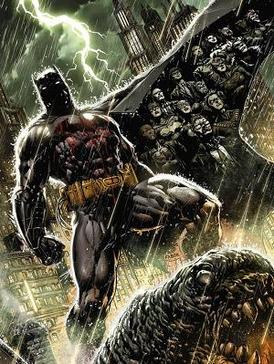
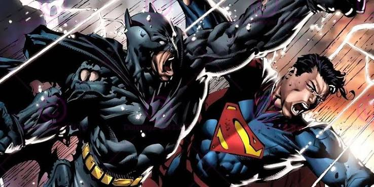

Batman has defined the superhero genre. Batman first appeared in Detective Comics #27 in 1939. He was created by Bob Kane and Bill Finger. Batman has been adapted into many different media, including television shows, movies, and video games. He has become a cultural icon and is widely regarded as one of the greatest superheroes of all time. Thanks to Batman, superheroes as a whole have evolved into what they are today.


The Batman is one of the most infuential superheroes in all of history, even though he is regarded as a superhero, he has no superpowers. Bruce Wayne, is the man behind the mask, and like us he struggles with his inner turmoil of being a human. He watched his parents get murdered in front of him. He grew up broken in that way. His obsession with both death and stopping it lead him to becoming Batman and swearing to never take a life. Whats so beutiful about his character is that hes someone we can relate to. We all struggle every day with ourselves. Our own issues plague us every day, but like batman we can continue to fight it, and inspire others to get over their own issues.
Bruce Wayne became Batman when he saw his family die in front of him. A perfect representation of his growth as a character is his evenetual family that he raised. The batfamily were all people that were broken just like Bruce. Bruce was able to bring them in and help them turn out better than himself. The batfamily is a perfect represenation of growth for Bruce. The boy who became angry and bitter to the world when he lost his family die, grows up to make his own family and help others stray away from the wrong path he fell down. The Batfamily is there to show us no longer how broken or hurt we feel, If we courage up the strength to keep going, We too can rise and become better for oursleves and others.


Although batman is simply a human. He repeatedly goes toe to toe with superhumans, aliens, gods, and so much more. Batman being a human makes him inspiring and relatable. It can be hard to relate to some superheroes because the solution to theyre problems come from their powers. When you see Batman do the impossible, its inspiring because he is a human. He is a man who has no superpowers, but he still manages to do the impossible. Batman is a symbol of hope for all of us. He shows us that we can overcome our own struggles and achieve greatness, even in the face of adversity.